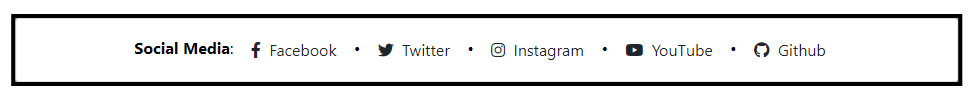

New Web Updates
Site updates and shit
⇃† Moved "Randomness"
† Moved "Meme Roulette"
† Spent like 15-30 minutes the past hour making this look better than any other part of this version of my site archive.
Broken shit
⇃⋇ My socials buttons won't show on the public version of my site but when I preview it via my browser it works... Fuck knows why lol
⋇ In the screenshot below, this is what you should see at the bottom of every page (except Meme Roulette
Notes and other shit
↿⌖ When I first uploaded the first version of "New Website", it wouldn't all upload because of the size limiations they have, plus my site as of when I tried uploading it was around 20-25+ GB which was like a long while ago and now it's around ~50GBish ~75-77.5GB ∇ Feb 25
⌖ Every month I will be archiving these "Update" logs and making them accessible if you want to look at them for whatever reason, which'll take effect starting from March (as long as I don't forget lol) ∇ Feb 25